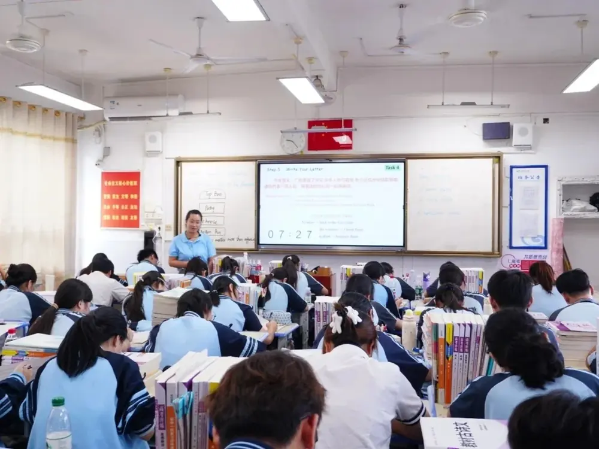

教学教研
课堂是学校最重要的事。我们把功夫下在看不见的地方：一次备课、一场研讨、一遍遍修改的教学设计。

Teaching
把功夫，
下在看不见的地方。
我们不追求“表演式”的公开课。每一节日常课，都要经历独立备课、集体研讨、课堂实践与课后复盘。
教研组每周固定时间开展集体备课，围绕学情分析、目标设定、任务设计与作业反馈展开讨论。学校推行“二三一”高效课堂，近两年 22 项课题结题、14 项在研，多篇教学论文发表。
查看教研动态课程体系
国家课程为体，
选择为翼。
以国家课程为主体，以校本课程和社团课程为两翼，为不同的兴趣与节奏提供选择。
国家课程
开齐开足开好国家课程，落实学科核心素养。以真实问题驱动学习，让知识在情境中被理解、被使用。
校本选修
结合校情与本地资源，开设阅读写作、科学探究、生活技能、艺术审美等方向的校本选修，学生按兴趣走班。
社团课程
合唱、足球、篮球、科创、文创、劳动实践等社团常态化运行，固定时间、固定场地、固定指导教师。
衔接课程
面向高一新生开设适应性课程，帮助学生在学习方法、作息管理与心理调适上平稳过渡。

独立备课
教师先独立研读教材与课标，形成自己的教学理解，不急于参考现成教案。
集体研讨
教研组围绕“学生会在哪里卡住”展开讨论，共同修改学习任务与问题链。
课堂实践
同课异构、推门听课、师徒互听。真实的课堂，是检验设计的最好方式。
复盘改进
课后复盘，改进意见进入下一轮备课，让教学设计持续迭代。
教师成长
教师成长，
是学校最重要的投资。
一支稳定的教师队伍，是教育质量最可靠的保障。学校通过“青蓝工程”、同课异构与课题研究，让教师在实践与反思中持续成长；近两年 22 项课题结题、14 项在研。
青蓝工程
为青年教师配备学科师父，从备课、上课到班级管理进行一对一指导，缩短成长周期。
同课异构
同一课题，不同设计。教师在比较中看见差异，在差异中反思自己的教学假设。
课题引领
围绕真实教学问题开展小课题研究，让教研不止于经验，也有证据与方法。
教研组
一起备课的人。
各学科教研组是教学质量的基层单元，也是教师彼此支持的专业共同体。
语文教研组
数学教研组
英语教研组
物理 · 化学 · 生物教研组
政治 · 历史 · 地理教研组
体育 · 艺术 · 信息技术教研组
想了解孩子将在这里怎样学习？
欢迎预约校园开放日，走进真实课堂，和老师聊一聊。